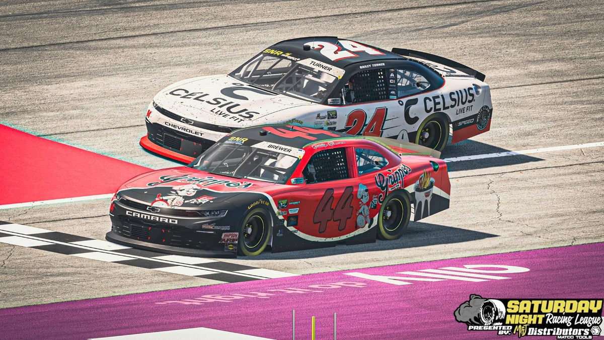

Brewer Breaks Through — First Career Cup Series Win at Michigan in Overtime Thriller

Phillip Brewer is a Saturday Night Racing League Cup Series winner. The former SNR Challenger Series Champion broke through for his first career Cup Series victory in his 64th career start, holding off a hard-charging Bailey Turner in a Green-White-Checkered overtime finish at Michigan International Speedway.
It was a relatively clean but intense race through the first 70 laps of the 100 scheduled, with only a single caution for an incident involving a three-car crash that included championship Chase contender Joshua Banks, Chad Clinger, and Rob Hamp. Through those opening laps, Bailey Turner was the class of the field — dominating the first two-thirds of the race and leading a race-high 57 laps from the green flag.
But the chaos that followed mixed up strategy and saw nine different leaders cycle to the front over the course of the night. Six cautions in total flew on the night, and as the laps wound down, it was Brewer who found himself out front — having been strong all evening and leading 29 laps, including the ones that mattered most.
Starting from the pole, Brewer hung onto the race leader through the closing laps and navigated the Green-White-Checkered attempts with poise. In a thrilling finish, the former Challenger Series Champion held off Turner’s final charge to secure his first career SNR Cup Series victory — a milestone moment in a long and persistent career.
Joshua Banks recovered from his early incident to finish 3rd, while Reggie Ortega charged to a 4th-place finish. Jeff J. Wright came home 5th, followed by Dakota Floyd2 in 6th, J R Shepherd in 7th, and Christopher Hodges in 8th. A.J. Stravato and Kenny Kibbey rounded out the top 10.
Elliott Butler, who entered the night 2nd in the Chase standings after his Talladega win, had a race to forget. After surging from a 15th-place qualifying spot, Butler was running solidly inside the top 10 and challenging for the top 5 before getting collected in a late-race wreck that cost him valuable positions in the championship standings. He ultimately finished 26th, 8 laps down. The incident also snapped Butler’s impressive 10-race streak of finishing better than where he qualified — a run that dated all the way back to Race 9 at EchoPark Speedway on April 24, 2026.
Chase Standings — 2 Races Remaining
Bailey Turner’s runner-up finish vaulted him to the championship lead at 2,140 points — but just 1 point ahead of Joshua Banks at 2,139, making it a two-driver battle at the top.
| Pos | Driver | Points | Behind |
|---|---|---|---|
| 1 | Bailey Turner | 2,140 | Leader |
| 2 | Joshua Banks | 2,139 | −1 |
| 3 | Phillip Brewer | 2,129 | −11 |
| 4 | Jeff J. Wright | 2,119 | −21 |
| T5 | Elliott Butler | 2,118 | −22 |
| T5 | Kenny Kibbey | 2,118 | −22 |
| 7 | Dakota Floyd2 | 2,113 | −27 |
| 8 | J R Shepherd | 2,112 | −28 |
| 9 | Seth Hatchel | 2,088 | −52 |
| 10 | A.J. Stravato | 2,083 | −57 |
| 11 | Caleb Weekley | 2,076 | −64 |
| 12 | Chuck Sweeting | 2,073 | −67 |
| 13 | Angelo Hronis | 2,065 | −75 |
| 14 | Justin Richie | 2,060 | −80 |
The SNR Cup Series heads to Bristol Motor Speedway next Saturday Night for Chase Race 4 of 5. Tune into VSPEED for full live coverage!